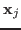
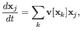
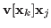
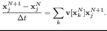
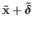
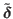
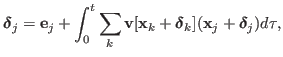
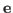

Vesicles are inextensible capsules filled with and submerged in a viscous fluid. Their dynamics are governed by an internal energy due to bending and tension, a background velocity, and the inextensibility condition. In many simulations, the dynamics can complicate or simplify, and, therefore, we are introducing time adaptivity. In order to allow for large time steps, we are only interested in second- or higher-order methods. Unfortunately, backward difference formulas that use two or more previous time steps can become unstable if the time step size changes too rapidly. Therefore, we iteratively use a first-order method in a spectral deferred correction (SDC) framework to develop high-order solutions that only require the previous time step. The result is a high-order method that remains stable even if the time step size changes rapidly.
The velocity of a vesicle , parameterized by

with tension |

is the velocity due to vesicle |

where
is an approximate solution of |

is the residual of the previous solution. This update can be performed iteratively, and, asymptotically, each iteration increases the formal order of accuracy by one.